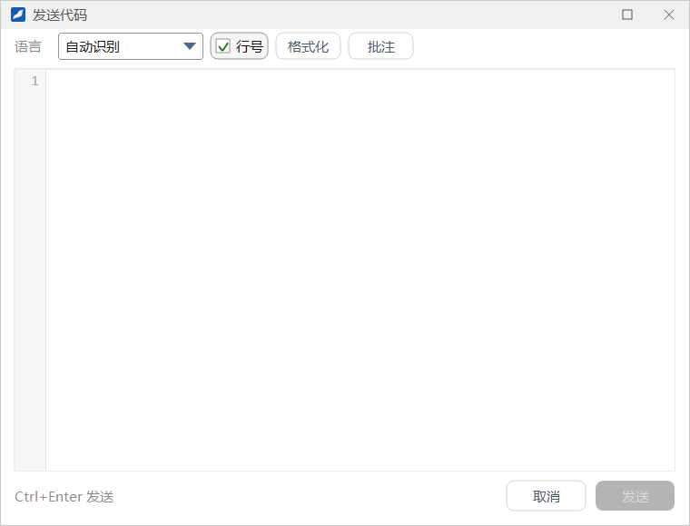
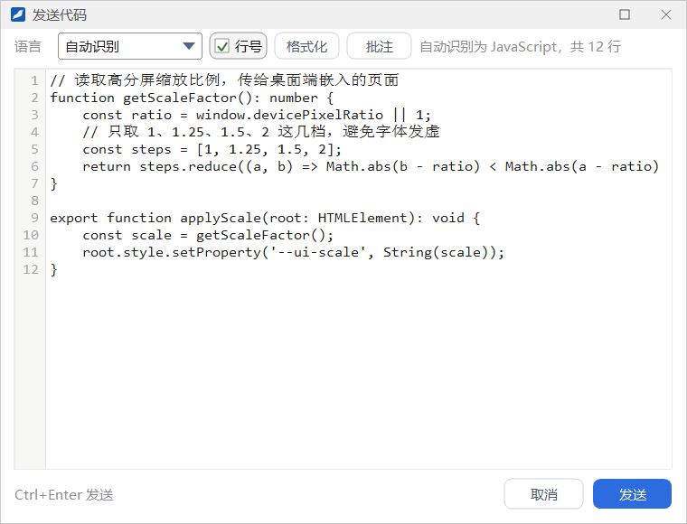
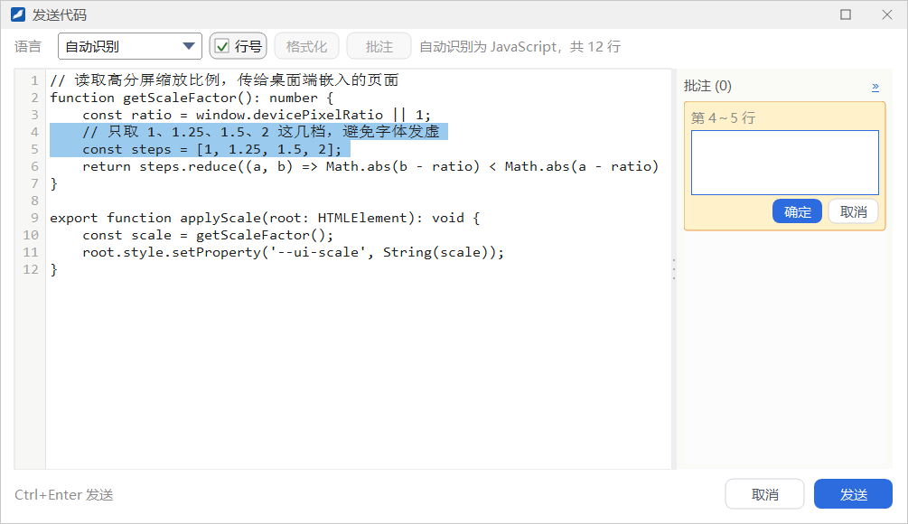
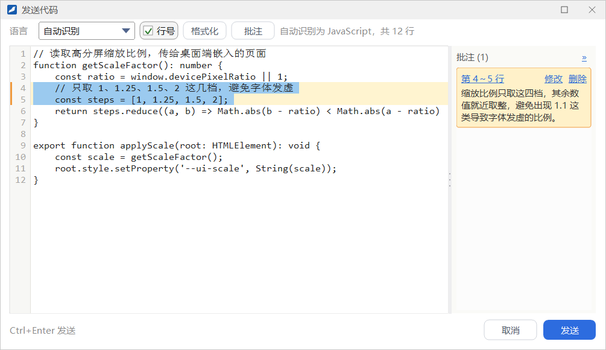
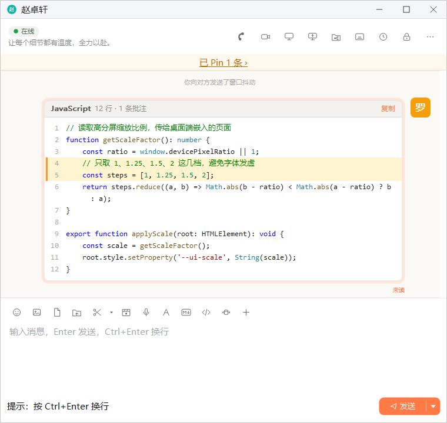
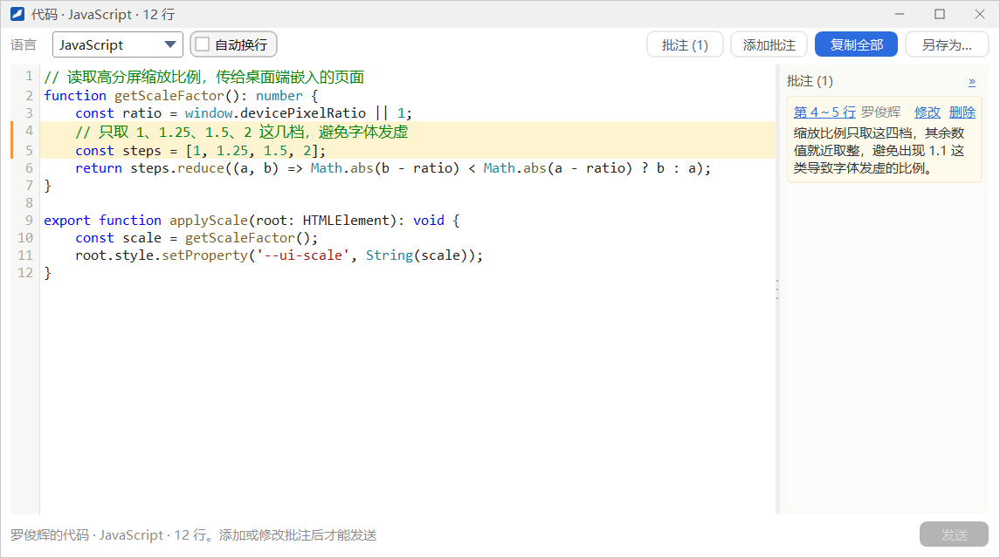

代码片段
把代码当普通文字发出去，缩进和格式容易乱，也不好阅读。用「发送代码」发出的代码片段会保留原样、按语言着色并带行号，还可以针对某几行写批注，适合讨论代码时使用。
- 适用：全体员工
- 单聊、群聊通用
- 每段代码最多 50 条批注，每条最多 200 个字
发送代码
点聊天窗口输入工具栏的 发送代码 按钮（「</>」图标），打开「发送代码」窗口：


- 在编辑区输入或粘贴代码。编辑区为空时显示提示「在这里输入或粘贴代码」，按 Tab 会插入制表符。
- 确认 语言。默认是 自动识别，识别结果显示在工具行右侧；识别不准时可以在下拉框里手动选择，可选纯文本、C/C++、C#、Java、Python、JavaScript、Go、Rust、SQL、Shell、JSON、XML/HTML、Lua、PHP。
- 按需使用工具行上的其他功能：行号 勾选框控制编辑区左侧是否显示行号；格式化 整理缩进（见下文）；批注 给选中的行添加说明（见下文「批注」）。
- 点 发送 或按 Ctrl+Enter 发出。点 取消 或按 Esc 关闭窗口、不发送。
格式化点 格式化（或按 Ctrl+Shift+F、在编辑区右键选「格式化」）会整理代码：去掉行尾空白和多余空行，C/C++、Java、JavaScript 等语言按括号层次重新缩进，JSON、SQL 会重新排版。选中了一部分代码时只处理选中的行。结果显示在工具行右侧（例如「已格式化，调整了 3 行」），不满意可以按 Ctrl+Z 撤销。
其他发送方式往空的聊天输入框里粘贴一段像代码的文字时，输入框上方会提示「看起来是一段代码」，点 以代码片段发送 就会把它移进「发送代码」窗口。另外，在输入框里输入一整条以
``` 开头、以 ``` 结尾的消息（开头的 ``` 后面可以写语言名，如 ```python），按 Enter 发出时也会作为代码片段发送。批注
批注是针对某几行代码的说明，显示在代码右侧的批注栏里，不会混进代码本身。
- 在编辑区选中要说明的一行或几行（只放了光标时就是光标所在的那一行）。
- 点工具行的 批注，或在编辑区右键选 添加批注…。窗口右侧展开批注栏，出现一张标着「第 X～Y 行」的卡片和输入框。
- 写下说明，点 确定（或按 Ctrl+Enter）；点 取消（或按 Esc）放弃这条批注。
- 确定后，被批注的行在代码里显示浅黄色底色，行号左侧有一条橙色竖条。卡片上的 修改、删除 可以改动或删除这条批注。


- 批注栏顶部显示「批注 (N)」，点右端的 » 可以收起批注栏，这时工具行的按钮显示为「批注 (N)」，点它重新展开。
- 删除批注后，工具行右侧会出现「已删除 1 条批注」和 撤销 链接，点 撤销 可以恢复刚删掉的批注。
- 点批注卡片上的「第 X～Y 行」，会在代码里选中这几行。修改代码后，批注会跟着对应的行移动；所在的行被整段删除时，批注也会一并删除，工具行右侧会说明。
代码卡片
发出的代码片段在聊天里显示为代码卡片：顶部写着语言、行数和批注条数（如「JavaScript 12 行 · 1 条批注」），右侧有 复制；正文按语言着色、带行号，被批注的行有浅黄底色和橙色竖条，但卡片里不显示批注的文字。

- 点 复制 只复制代码（不含批注），复制后短暂显示「已复制」。
- 代码较长时，卡片只显示前面一部分，底部出现「查看全部（共 N 行）」。
- 点卡片的其他位置，或右键选 在窗口中查看，会打开代码查看窗口。
- 右键菜单还有 复制代码、另存为…（按语言给出文件扩展名）和 添加批注…，其他菜单项与普通消息相同，见「消息的更多操作」。
代码查看窗口

窗口标题显示语言和行数（如「代码 · JavaScript · 12 行」），工具条上有：
| 控件 | 作用 |
|---|---|
| 语言 | 换一种语言着色，只影响这个窗口的显示，不改变消息 |
| 自动换行 | 勾选后长行自动折行，不勾选时可以左右滚动 |
| 批注 (N) | 展开或收起右侧的批注栏 |
| 添加批注 | 给选中的行追加批注，见下文 |
| 复制全部 | 复制全部代码，不含批注 |
| 另存为… | 把代码保存为文件 |
批注栏里每条批注都写明作者，点「第 X～Y 行」会在代码里选中这几行；把光标放到被批注的行上，对应的批注卡片也会高亮。
在收到的代码上追加批注
收到的代码片段，你也可以针对某几行写批注再发回去，双方都能这样一轮轮讨论：
- 在代码查看窗口里选中几行，点 添加批注（或在正文右键选 添加批注…），在批注栏里写下说明并确定。也可以在聊天中的代码卡片上右键选 添加批注… 打开查看窗口。
- 窗口底部显示「已新增或修改 N 条批注」，发送 按钮变为可用。没有新增或修改批注时，发送 不能点，底部提示「添加或修改批注后才能发送」。
- 点 发送。查看窗口关闭，聊天里出现一张新的代码卡片，带着全部批注并引用原来那条消息；原来的卡片保持不变。对方的卡片顶部会写「N 条批注，其中 M 条是新的」，打开后新的批注带「新」字标记。
谁能修改哪条批注每个人只能修改、删除自己写的批注，别人的批注只能查看。同一行可以有多人各写一条批注。有还没发出的批注时关闭查看窗口，会询问「有 N 条批注还没发出，关闭后会丢弃。要关闭吗？」。从消息记录窗口或聊天记录查看窗里打开的代码查看窗口只能查看，不能追加批注。